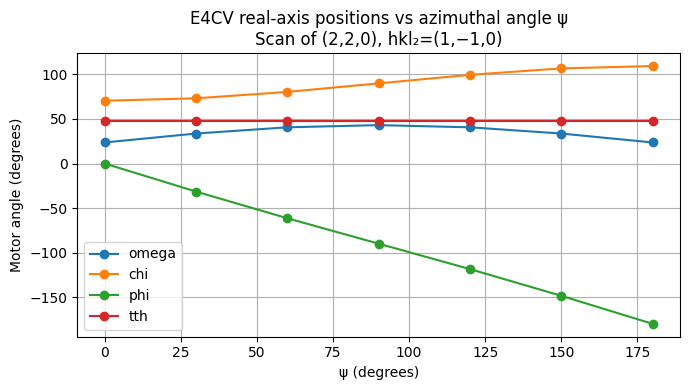

How to Perform an Azimuthal (ψ) Scan#
An azimuthal scan (also called a ψ scan) rotates the sample about the scattering vector Q while holding the reciprocal-space position (h, k, l) fixed. This probes how diffracted intensity varies with sample orientation around a Bragg reflection — useful for surface diffraction, multiple-beam diffraction studies, and verifying crystal alignment.
Solver-specific feature
Azimuthal scanning relies on the psi_constant mode provided by the
hkl_soleil solver. Not all solvers or geometries support this mode.
Geometries that include psi_constant in their hkl engine include:
E4CV, E4CH, K4CV, E6C, K6C, APS POLAR, SOLEIL MARS, PETRA3 P23 4C, and
PETRA3 P23 6C. Check Diffractometers for your geometry.
See also
hkl_soleil E6C psi axis — E6C worked demonstration including the inverse case (computing ψ from real motor positions).
Use E4CV’s q calculation engine — how to select a calculation engine at creation time.
How to Use Constraints — how to set axis limits and cut points.
How to Work with a Diffractometer — how to define and orient a diffractometer.
Prerequisites#
A diffractometer using the
hkl_soleilsolver with a geometry that supportspsi_constantmode.A crystal sample with its lattice defined and a computed UB matrix.
A reference reflection hkl₂ that is not parallel to the scan reflection hkl — it defines the direction of ψ = 0.
A running bluesky
RunEngine.
Setup#
Create a simulated E4CV diffractometer, define a silicon sample, add two orientation reflections, and compute the UB matrix.
The orientation reflections use positive angles appropriate for a typical laboratory diffractometer with Cu Kα radiation (λ = 1.54 Å):
# |
h |
k |
l |
ω |
χ |
φ |
2θ |
|---|---|---|---|---|---|---|---|
1 |
1 |
1 |
1 |
14.22° |
35.26° |
0° |
28.44° |
2 |
2 |
2 |
0 |
23.65° |
90.00° |
0° |
47.30° |
import matplotlib.pyplot as plt
import numpy as np
import bluesky
import databroker
from bluesky.callbacks.best_effort import BestEffortCallback
from ophyd.sim import noisy_det
import hklpy2
from hklpy2.user import (
add_sample,
calc_UB,
set_diffractometer,
setor,
wh,
)
RE = bluesky.RunEngine()
cat = databroker.temp().v2
RE.subscribe(cat.v1.insert)
bec = BestEffortCallback()
RE.subscribe(bec)
bec.disable_plots()
fourc = hklpy2.creator(name="fourc", geometry="E4CV", solver="hkl_soleil")
set_diffractometer(fourc)
add_sample("silicon", a=hklpy2.SI_LATTICE_PARAMETER)
# Two orientation reflections for silicon at wavelength 1.54 Å (Cu Kα)
r1 = setor(1, 1, 1, omega=14.22, chi=35.26, phi=0, tth=28.44, wavelength=1.54)
r2 = setor(2, 2, 0, omega=23.65, chi=90.00, phi=0, tth=47.30, wavelength=1.54)
calc_UB(r1, r2)
wh()
wavelength=1.54
pseudos: h=0, k=0, l=0
reals: omega=0, chi=0, phi=0, tth=0
Apply realistic motor constraints#
Restrict the real axes to physically accessible angles. Without these
constraints the solver may return solutions with negative omega or tth,
which would place the detector below the floor on a real instrument.
The choice of reference reflection hkl₂ and the phi cut point together determine whether phi travels monotonically across the full ψ range. Using hkl₂ = (1, -1, 0) with a phi cut point of -180° causes phi to decrease smoothly from 0° to -180° as ψ increases from 0° to 180° — no discontinuity.
fourc.core.constraints["omega"].limits = 0, 90
fourc.core.constraints["tth"].limits = 0, 180
fourc.core.constraints["chi"].limits = 0, 180
# Set phi cut point so phi decreases monotonically from 0° to -180°
fourc.core.constraints["phi"].cut_point = -180
fourc.core.constraints["phi"].limits = -180, 0
print(fourc.core.constraints)
['0.0 <= omega <= 90.0 [cut=-180.0]', '0.0 <= chi <= 180.0 [cut=-180.0]', '-180.0 <= phi <= 0.0 [cut=-180.0]', '0.0 <= tth <= 180.0 [cut=-180.0]']
Switch to psi_constant mode#
The psi_constant mode keeps ψ fixed at a user-supplied value while
forward() finds real-axis angles for any requested (h, k, l).
This mode requires four extra parameters:
Extra |
Meaning |
|---|---|
|
Miller indices of the reference reflection that defines ψ = 0 |
|
The azimuthal angle (degrees) to hold constant |
The reference reflection (h2, k2, l2) must not be parallel to the
scan reflection (h, k, l) — their cross product must be non-zero, or
ψ is undefined.
print("Available modes:", fourc.core.modes)
fourc.core.mode = "psi_constant"
print("Selected mode:", fourc.core.mode)
print("Extra parameters:", list(fourc.core.extras.keys()))
Available modes: ['bissector', 'constant_omega', 'constant_chi', 'constant_phi', 'double_diffraction', 'psi_constant']
Selected mode: psi_constant
Extra parameters: ['h2', 'k2', 'l2', 'psi']
# Scan the (2, 2, 0) reflection.
# Reference reflection hkl2 = (1, -1, 0) gives monotonic phi across the full psi range.
fourc.core.extras = dict(h2=1, k2=-1, l2=0, psi=0)
print("Extras:", fourc.core.extras)
Extras: {'h2': 1, 'k2': -1, 'l2': 0, 'psi': 0}
Verify single-point forward calculations#
Before running a scan, check that forward() returns valid solutions at
a few ψ values across the intended range. This catches constraint or
geometry problems before committing to a full scan.
Note that tth remains constant throughout (|Q| is fixed), while
omega and chi vary as the diffractometer adjusts to maintain the
Bragg condition at each azimuthal angle. Only phi travels monotonically
from 0° to -180° without discontinuity, confirming that the chosen
reference reflection and phi cut point are correct.
print(f"{'psi':>6} {'omega':>10} {'chi':>10} {'phi':>10} {'tth':>10}")
print("-" * 55)
for psi in np.linspace(0, 180, 7):
fourc.core.extras = dict(h2=1, k2=-1, l2=0, psi=psi)
try:
sol = fourc.forward(2, 2, 0)
print(
f"{psi:6.1f} {sol.omega:10.4f} {sol.chi:10.4f}"
f" {sol.phi:10.4f} {sol.tth:10.4f}"
)
except Exception as exc:
print(f"{psi:6.1f} *** no solution: {exc}")
psi omega chi phi tth
-------------------------------------------------------
0.0 23.6413 70.5244 0.0000 47.2826
30.0 33.6687 73.2176 -31.4828 47.2826
60.0 40.6691 80.4038 -61.4398 47.2826
90.0 43.1169 90.0000 -90.0000 47.2826
120.0 40.6691 99.5962 -118.5602 47.2826
150.0 33.6687 106.7824 -148.5172 47.2826
180.0 23.6413 109.4756 -180.0000 47.2826
Run the azimuthal scan#
Use scan_extra() to sweep ψ
over a range while holding (h, k, l) fixed.
Note
scan_extra scans an extra parameter of the solver engine, not a pseudo
axis. The pseudos keyword fixes (h, k, l) throughout the scan.
The extras keyword sets h2, k2, l2 (the reference reflection);
psi is supplied as the scanned axis and overrides any value in extras.
(uid,) = RE(
fourc.scan_extra(
[noisy_det, fourc],
"psi",
0,
180, # scan psi from 0° to 180°
num=7,
pseudos=dict(h=2, k=2, l=0), # hold (2, 2, 0) fixed
extras=dict(h2=1, k2=-1, l2=0), # reference reflection (1, -1, 0)
)
)
print("Run uid:", uid)
Transient Scan ID: 1 Time: 2026-04-15 00:22:52
Persistent Unique Scan ID: 'b57b4665-2135-47e6-b720-8d25e6a93d95'
New stream: 'primary'
+-----------+------------+------------+-----------------------+-------------------+------------+------------+------------+-------------+------------+------------+------------+------------------+
| seq_num | time | noisy_det | fourc_beam_wavelength | fourc_beam_energy | fourc_h | fourc_k | fourc_l | fourc_omega | fourc_chi | fourc_phi | fourc_tth | fourc_extras_psi |
+-----------+------------+------------+-----------------------+-------------------+------------+------------+------------+-------------+------------+------------+------------+------------------+
| 1 | 00:22:52.4 | 0.986 | 1.540 | 8.051 | 2.000 | 2.000 | -0.000 | 23.641 | 70.524 | -0.000 | 47.283 | 0.000 |
| 2 | 00:22:52.5 | 1.094 | 1.540 | 8.051 | 2.000 | 2.000 | 0.000 | 33.669 | 73.218 | -31.483 | 47.283 | 30.000 |
| 3 | 00:22:52.5 | 1.088 | 1.540 | 8.051 | 2.000 | 2.000 | 0.000 | 40.669 | 80.404 | -61.440 | 47.283 | 60.000 |
| 4 | 00:22:52.5 | 1.057 | 1.540 | 8.051 | 2.000 | 2.000 | 0.000 | 43.117 | 90.000 | -90.000 | 47.283 | 90.000 |
| 5 | 00:22:52.5 | 0.934 | 1.540 | 8.051 | 2.000 | 2.000 | 0.000 | 40.669 | 99.596 | -118.560 | 47.283 | 120.000 |
| 6 | 00:22:52.5 | 0.908 | 1.540 | 8.051 | 2.000 | 2.000 | 0.000 | 33.669 | 106.782 | -148.517 | 47.283 | 150.000 |
| 7 | 00:22:52.5 | 0.974 | 1.540 | 8.051 | 2.000 | 2.000 | 0.000 | 23.641 | 109.476 | -180.000 | 47.283 | 180.000 |
+-----------+------------+------------+-----------------------+-------------------+------------+------------+------------+-------------+------------+------------+------------+------------------+
Plan ['b57b4665'] (scan num: 1)
Run uid: b57b4665-2135-47e6-b720-8d25e6a93d95
Alternative: use scan_psi() convenience plan#
The scan_psi() convenience plan wraps the
mode-selection and scan_extra ceremony into a single call.
It auto-detects the psi-capable mode and the psi extra axis name
from the diffractometer’s solver, and restores the prior mode on exit.
Note
The mode= and psi_axis= keyword arguments are available as
escape hatches when auto-detection is ambiguous (e.g. on E6C where
both "psi_constant" and "psi_constant_vertical" are available).
from hklpy2 import scan_psi
# Restore bissector mode first to show scan_psi switches mode automatically.
fourc.core.mode = "bissector"
print("Mode before scan_psi:", fourc.core.mode)
(uid2,) = RE(
scan_psi(
[noisy_det, fourc],
fourc,
h=2,
k=2,
l=0,
hkl2=(1, -1, 0),
psi_start=0,
psi_stop=180,
num=7,
)
)
print("Run uid:", uid2)
print("Mode after scan_psi:", fourc.core.mode) # restored to bissector
Inspect the scan results#
run = cat[uid]
ds = run.primary.read()
print(
ds[
[
"fourc_extras_psi",
"fourc_phi",
"fourc_chi",
"fourc_omega",
"fourc_h",
"fourc_k",
"fourc_l",
]
]
)
/home/beams/JEMIAN/.conda/envs/hklpy2/lib/python3.13/site-packages/databroker/intake_xarray_core/base.py:23: FutureWarning: The return type of `Dataset.dims` will be changed to return a set of dimension names in future, in order to be more consistent with `DataArray.dims`. To access a mapping from dimension names to lengths, please use `Dataset.sizes`.
'dims': dict(self._ds.dims),
<xarray.Dataset> Size: 448B
Dimensions: (time: 7)
Coordinates:
* time (time) float64 56B 1.776e+09 1.776e+09 ... 1.776e+09
Data variables:
fourc_extras_psi (time) float64 56B 0.0 30.0 60.0 90.0 120.0 150.0 180.0
fourc_phi (time) float64 56B -1.112e-06 -31.48 ... -148.5 -180.0
fourc_chi (time) float64 56B 70.52 73.22 80.4 90.0 99.6 106.8 109.5
fourc_omega (time) float64 56B 23.64 33.67 40.67 ... 40.67 33.67 23.64
fourc_h (time) float64 56B 2.0 2.0 2.0 2.0 2.0 2.0 2.0
fourc_k (time) float64 56B 2.0 2.0 2.0 2.0 2.0 2.0 2.0
fourc_l (time) float64 56B -2.308e-09 1.876e-09 ... 3e-12
Plot motor angles vs ψ#
Plot the real-axis positions recorded during the scan as a function of ψ.
Only tth is constant throughout (|Q| is fixed); omega and chi
vary as the diffractometer maintains the Bragg condition at each azimuthal
angle, and phi carries the primary azimuthal rotation.
psi = ds["fourc_extras_psi"].values
fig, ax = plt.subplots(figsize=(7, 4))
for motor in ("fourc_omega", "fourc_chi", "fourc_phi", "fourc_tth"):
label = motor.removeprefix("fourc_")
ax.plot(psi, ds[motor].values, marker="o", label=label)
ax.set_xlabel("ψ (degrees)")
ax.set_ylabel("Motor angle (degrees)")
ax.set_title(
"E4CV real-axis positions vs azimuthal angle ψ\nScan of (2,2,0), hkl₂=(1,−1,0)"
)
ax.legend()
ax.grid(True)
plt.tight_layout()
plt.show()

The table confirms:
fourc_extras_psisteps evenly from 0° to 180°.fourc_phidecreases monotonically from 0° to -180° — no discontinuity.fourc_tthremains constant — |Q| is fixed.fourc_omegaandfourc_chivary as the diffractometer maintains the Bragg condition.fourc_h,fourc_k,fourc_lremain at (2, 2, 0) throughout.
Choosing a reference reflection to avoid discontinuities#
The choice of reference reflection hkl₂ determines which real axis moves during the scan and how it behaves. A poor choice can produce a 360° wrap-around discontinuity mid-scan (e.g. phi jumping from -180° to +180°) that causes the motor to slew the long way around.
To check for discontinuities before scanning, run the verification loop above over the full ψ range and inspect the phi differences between adjacent steps. If any step exceeds ~180°, change hkl₂ and/or adjust the phi cut point and limits until the travel is monotonic.
General guidance:
Choose hkl₂ perpendicular to both hkl and the rotation axis you want to move primarily.
Set the phi cut point to the starting phi value (or slightly below it) so the full range falls within
[cut, cut+360).Verify with
forward()before running the scan.
Common pitfalls#
Parallel hkl and hkl2
: If the scan reflection and the reference reflection are parallel
(e.g. (1,0,0) and (2,0,0)), their cross product is zero and ψ is
undefined. The solver returns no solutions. Choose a reference
reflection that is not parallel to the scan reflection.
Phi discontinuity mid-scan : If phi jumps by ~360° at some ψ value, the motor will slew the long way around. Fix this by choosing a different hkl₂ and/or adjusting the phi cut point and limits. See the section above.
Constraint limits blocking solutions
: If forward() fails at some ψ values, a real axis may be hitting its
limit at those azimuthal angles. Widen the limits or choose a different
starting orientation. See How to Use Constraints.
Unrealistic motor angles without constraints
: Without constraints, the solver may return solutions with negative omega
or tth. Always set realistic axis limits before scanning.
Solver-specific feature
: psi_constant mode is provided by the hkl_soleil solver. If your
diffractometer uses a different solver (e.g. th_tth), this mode is not
available. Check fourc.core.modes to see what is supported.
Engine is immutable
: The hkl engine (used here) cannot be changed after the diffractometer
is created. To read the current ψ from real motor positions (the
inverse case), create a second diffractometer instance with
solver_kwargs=dict(engine="psi"). See
hkl_soleil E6C psi axis for a complete example.